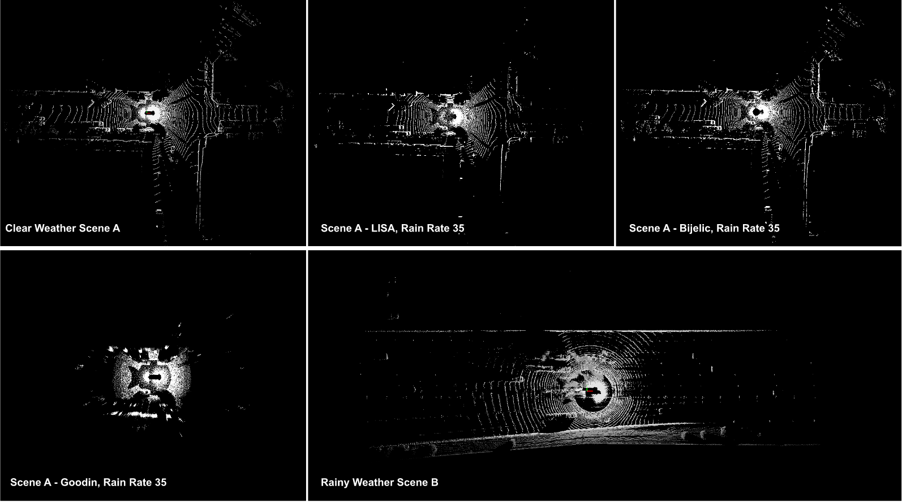
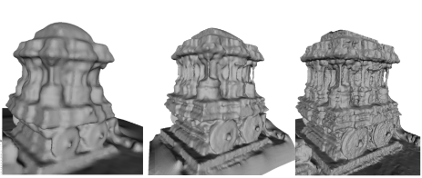

News
- October 2020 - Poster paper accepted at SIGGRAPH Asia 2020.
- August 2020 - I have joined the Electrical and Computer Engineering Department at Johns Hopkins University to pursue a Ph.D. under the Ferdinand Hamburger, Jr. Fellowship.
- March 2020 - I will be presenting my undergrad thesis work on single underwater image restoration at the WiCV workshop at ECCV 2020
|
Research
I am interested in computer vision, deep learning, and 3D pointcloud processing.
I am always open to participating in collaborations! Feel free to reach out
if you want to work with me on problems in 3D computer vision and scene understanding.
|
|
|
Attentive Prototypes for Source-free Unsupervised Domain Adaptive 3D Object Detection
Deepti Hegde,
Vishal M. Patel,
arXiv
code
Addressing the limitations of traditional feature aggregation methods for prototype computation in the presence of noisy labels,
we utilize a transformer module to identify outlier ROI's that correspond to incorrect, over-confident annotations, and compute an attentive
class prototype. Under an iterative training strategy, the losses associated with noisy pseudo labels are down-weighed and thus refined in the process of
self-training.
|

|
Uncertainty-aware Mean Teacher for Source-free Unsupervised Domain Adaptive 3D Object Detection
Deepti Hegde,
Vishwanath Sindagi,
Velat Kilic,
A. Brinton Cooper,
Mark Foster,
Vishal Patel,
arXiv
In order to avoid reinforcing errors caused by label noise, we propose an uncertainty-aware mean teacher framework which implicitly filters incorrect pseudo-labels during training. Leveraging model uncertainty
allows the mean teacher network to perform implicit filtering by down-weighing losses corresponding uncertain pseudo-labels.
|
|

|
Lidar Light Scattering Augmentation (LISA): Physics-based Simulation of Adverse Weather Conditions for 3D Object Detection
Velat Kilic,
Deepti Hegde,
Vishwanath Sindagi,
A. Brinton Cooper,
Mark Foster,
Vishal Patel,
arXiv
code
We propose a physics-based approach to simulate lidar point clouds of scenes in adverse weather conditions. These augmented datasets can then be used to train lidar-based
detectors to improve their all-weather reliability. Specifically, we introduce a hybrid Monte-Carlo based approach that treats (i) the effects of large particles by placing
them randomly and comparing their back reflected power against the target, and (ii) attenuation effects on average through calculation of scattering efficiencies from the Mie
theory and particle size distributions.
|
|

|
Refining SfM Reconstructed Models of Indian Heritage Sites
T. Santosh Kumar,
Deepti Hegde,
Ramesh Ashok Tabib,
Uma Mudenagudi,
SIGGRAPH Asia, 2020
paper
We propose a method to refine sparse point clouds of complex structures generated by Structure from Motion in order to achieve improved visual
fidelity of ancient Indian heritage sites.
|
|
|
Framework for Single Underwater Image Restoration
Deepti Hegde,
Chaitra Desai,
Ramesh Ashok Tabib,
Uma Mudenagudi,
WiCV, ECCV, 2020
arXiv
Underwater images suffer from haze, blue/green tint, and color distortion caused by the attenuation and scattering of light.
We propose single image depth estimation and restoration of underwater images.
|
|

{kind=link}
{kind=link}